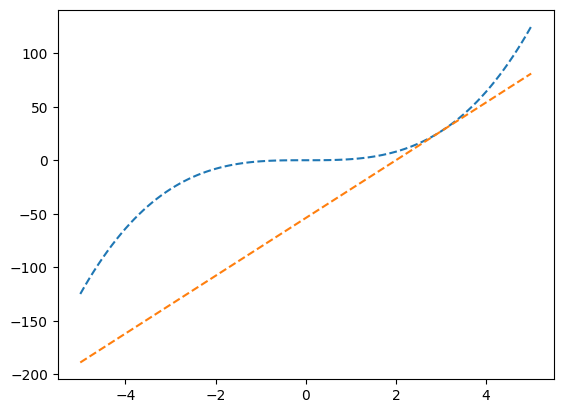
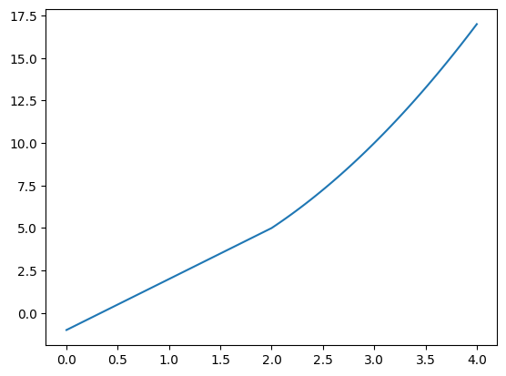
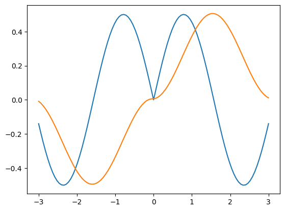

import numpy as np
import matplotlib.pyplot as plt1주차~2주차
자료형
그래프와 접선 반환 함수
# x0의 좌표를 넣으면 접선의 점들을 반환
def make_func(x0): # x0좌표넣기
f = lambda x: x**3 # 함수 정의
def func(x):
h = 0.0001
a = (f(x0+h)-f(x0))/h
return a*(x-x0) + f(x0)
return func
x = np.linspace(-5,5,101) #x범위 선
tan_line = make_func(3)
plt.plot(x,x**3,'--')
plt.plot(x,tan_line(x),'--')
미분함수 값 구하기
f = lambda x: (x+1)*(x**2+3)
h = 0.000001
(f(1+h)-f(1))/h8.000004001473826범위에 따른 그래프 그리기
f = lambda x: 3*x-1 if x<2 else x**2+1
x = np.linspace(0,4,101)
plt.plot(x,list(map(f,x)))
삼각함수 theta 값 변환
theta = np.linspace(3/2*np.pi,2*np.pi,100) #theta선언
np.argmin(np.abs(np.cos(theta) - np.sqrt(6)/3))60np.tan(theta[60])-0.7120967763793676##적분
f = lambda x: x+np.log(x)
x = np.linspace(1,np.exp(1),100)
np.mean((1+1/x)*f(x)) * (np.exp(1)-1)6.409521328970472절댓값함수 구현
x = np.linspace(-3,3,101)
ff = np.abs(np.sin(x))*np.cos(x)
f = np.cumsum(ff) * 0.06plt.plot(x,ff)
plt.plot(x,f)
등차수열 구현
def func(d):
n = np.arange(1,76)
an = 1+(n-1)*d
return np.abs(sum(an)-1046.25)d = np.linspace(0,1,101)[1:-1]
d[np.argmin(list(map(func,d)))]0.35000000000000003np.linspace(1,15,15)array([ 1., 2., 3., 4., 5., 6., 7., 8., 9., 10., 11., 12., 13.,
14., 15.])l(p) 구현
x = np.array([0, 1, 1, 0, 1, 0, 1, 0, 0, 0, 1, 0, 0, 0, 0, 1, 0, 1, 0, 0, 0, 1,
0, 0, 0, 1, 0, 1, 1, 0, 1, 0, 1, 0, 0, 0, 0, 0, 0, 1, 0, 0, 1, 0,
0, 0, 0, 0, 1, 0])
xarray([0, 1, 1, 0, 1, 0, 1, 0, 0, 0, 1, 0, 0, 0, 0, 1, 0, 1, 0, 0, 0, 1,
0, 0, 0, 1, 0, 1, 1, 0, 1, 0, 1, 0, 0, 0, 0, 0, 0, 1, 0, 0, 1, 0,
0, 0, 0, 0, 1, 0])l = lambda p: 16*np.log(p) + (50-16)*np.log(1-p)
h =0.000000001
(l(0.32+h)-l(0.32))/h3.5527136788005005e-06p = np.linspace(1/100,1,100)[:-1]
parray([0.01, 0.02, 0.03, 0.04, 0.05, 0.06, 0.07, 0.08, 0.09, 0.1 , 0.11,
0.12, 0.13, 0.14, 0.15, 0.16, 0.17, 0.18, 0.19, 0.2 , 0.21, 0.22,
0.23, 0.24, 0.25, 0.26, 0.27, 0.28, 0.29, 0.3 , 0.31, 0.32, 0.33,
0.34, 0.35, 0.36, 0.37, 0.38, 0.39, 0.4 , 0.41, 0.42, 0.43, 0.44,
0.45, 0.46, 0.47, 0.48, 0.49, 0.5 , 0.51, 0.52, 0.53, 0.54, 0.55,
0.56, 0.57, 0.58, 0.59, 0.6 , 0.61, 0.62, 0.63, 0.64, 0.65, 0.66,
0.67, 0.68, 0.69, 0.7 , 0.71, 0.72, 0.73, 0.74, 0.75, 0.76, 0.77,
0.78, 0.79, 0.8 , 0.81, 0.82, 0.83, 0.84, 0.85, 0.86, 0.87, 0.88,
0.89, 0.9 , 0.91, 0.92, 0.93, 0.94, 0.95, 0.96, 0.97, 0.98, 0.99])p[np.argmax(l(p))]0.32수렴발산 판단
sum([1/2**n for n in range(1,100)])1.0n = np.linspace(1,10000,10000)
an = 1/n
sn = np.cumsum(an)
snarray([1. , 1.5 , 1.83333333, ..., 9.78740603, 9.78750604,
9.78760604])랜덤난수 생성
- 0~1 사이에서 10개의 난수생성
np.random.rand(10)array([0.84323613, 0.02527665, 0.92869932, 0.14644205, 0.77705808,
0.85766583, 0.76895973, 0.79501297, 0.91382899, 0.47971707])- 0~2 사이에서 10개의 난수생성
np.random.rand(10)*2array([0.16174621, 1.12062743, 0.55825861, 1.57625627, 1.93815334,
1.8475947 , 0.97690983, 1.47023178, 0.27858998, 0.46153886])- 1~3 사이에서 10개의 난수생성
np.random.rand(10)*2 + 1array([1.61237633, 2.55299095, 1.84190731, 2.14810723, 1.09863028,
1.3259276 , 1.50301586, 1.40471319, 1.9368154 , 1.03094992])- [0,7) 에서 10개의 정수생성
np.random.randint(0,7,size=10)- [11,22,33] 에서 중복허용하여 20개 추출
np.random.choice([11,22,33],20)그래프 교점 좌표(1)
x = np.linspace(np.pi/2, np.pi,1000000)
f = lambda x: np.sin(3/2*x)
g = lambda x: np.cos(2*x)*np.sin(5*x)x[np.argmin(np.abs(f(x)-g(x)))]1.9462123119258816그래프 교점 좌표(2)
theta = np.linspace(3/2*np.pi,2*np.pi,500)[1:-1]
f = lambda x: np.sin(x)
theta[np.argmin(np.abs(np.array(list(map(f,-theta)))-1/3))]5.9432133566909116np.tan(5.9432133566909116)-0.35370531901177255